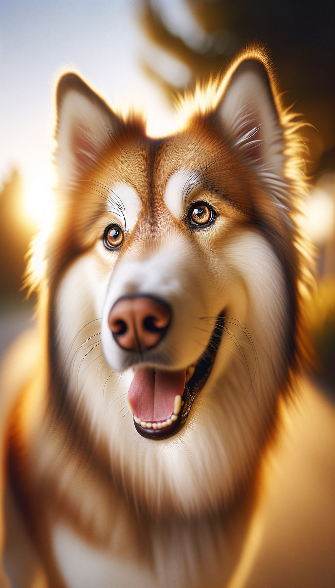
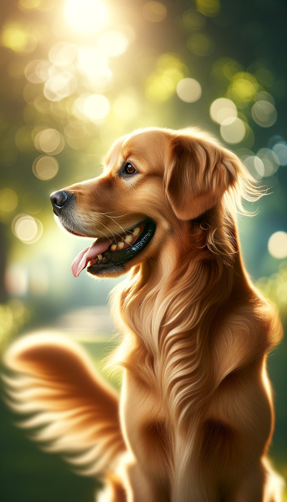

Belle

Belle the pitbull.
- Belle is a pitbull breed dog
- Belle is 3 years old
- Belle is energetic and friendly
Buddy

Buddy the husky-golden mix.
- Buddy is a Husky and Golden retriever mix
- Buddy is 2 years old
- Buddy is playful and friendly.
Cooper

Cooper the Golden Retriever.
- Cooper is a very cute Golden Retriever dog
- Cooper is 4 years old
- Cooper is extremely sociable and loves meeting new people and other animals. He's always wagging his tail and ready to make friends.